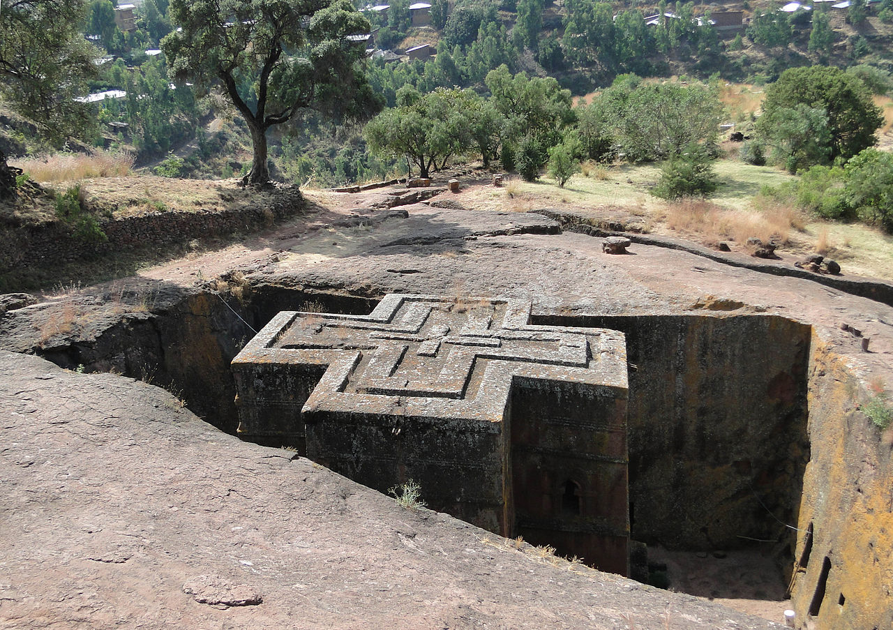
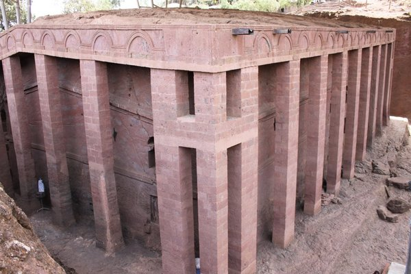

The Church of Lalibela
Do You Know About Rock-Cut Churches of Lalibela?
The small town of Lalibela in Ethiopia is home to one of the world's most astounding sacred sites: eleven rock-hewn churches, each carved entirely out of a single block of granite with its roof at ground level. Were it not for these extraordinary churches, Lalibela would almost certainly be well off the tourist radar. A dusty rural town nestled into rolling countryside, Lalibela only recently received electricity. It has few motorized vehicles, no gas stations and no paved streets. Isolated from the modern world, the town goes about its business much as it has for several hundred years. Of Lalibela's 8-10,000 people, over 1,000 are priests. Religious ritual is central to the life of the town, with regular processions, extensive fasts, crowds of singing and dancing priests. This, combined with its extraordinary religious architecture and simplicity of life, gives the city of Lalibela a distinctively timeless, almost biblical atmosphere.
King Lalibela's project for gaining the church's favor had two unexpected results: the creation of a holy place of unparalleled beauty and the king's conversion to a religious life. After laboring for 20 years, he abdicated his throne to become a hermit, living in a cave and eating only roots and vegetables. To this day, Ethiopian Christians regard King Lalibela as one of their greatest saints. The churches have been in continuous use since they were built in the 12th century. The first Europeans to see these extraordinary holy sites were Portugese explorers in the 1520s, one of whom noted in his journal that the sights were so fantastic, he expected readers of his descriptions would accuse him of lying.
What to See at the Rock-Cut Churches of Lalibela?
The roofs of the Lalibela churches are level with the ground and are reached by stairs descending into narrow trenches. The churches are connected by tunnels and walkways and stretch across sheer drops. The interior pillars of the churches have been worn smooth by the hands of supplicating worshippers.The rock-cut churches are simply but beautifully carved with such features as fragile-looking windows, moldings of various shapes and sizes, different forms of crosses, swastikas (an Eastern religious motif) and even Islamic traceries. Several churches also have wall paintings.Each church has its own resident monk who appears in the doorway in colorful brocade robes. Holding one of the church's elaborate processional crosses, usually made of silver, and sometimes a prayer staff, these monks are quite happy to pose for pictures. Some sport incongruously modern sunglasses with their splendid ensemble. In the "Northern Group" across the main road from St. George, the most notable church is Beta Medhane Alem, home to the Lalibela Cross and believed to be the largest monolithic church in the world. It is thought to be a copy of St. Mary of Zion in Axum. Bete Medhane Alem is linked by walkways and tunnels to Beta Maryam (St. Mary's), possibly the oldest of the churches. In the east wall of the church is an array of geometric carved windows in a vertical line. From the bottom up is: a Maltese cross in a square; a semi-circle shape like that on the Axum stelae; a Latin cross; and a simple square window.
When Is The Right Time To Visit?

Ethiopia enjoys a mild climate, with average temperatures below 20°C in the highlands. This number can rise past 30°C on the lowland fringes of eastern, southern and western Ethiopia. Generally the best time to visit is between October and June, when it is the dry season. Rains tend to stop in early October, meaning afterwards the highlands are lush and green – perfect for trekking amongst pretty wildflowers that have sprung up. Be sure to bring a sweater all year round due to Ethiopia’s elevation. If you’d like to visit during a festival, Ethiopia hosts some jubilant celebrations – from the Timkat festival in January, celebrated by orthodox Christians to the Hidar Tsion; a pilgrimage to Axum by Ethiopians from all over the country.
Where to Stay in Lalibela?
There’s a limited range of accommodation choices in Lalibela, but rooms are quite cheap here. Don’t expect much in terms of standards. Note that their prices can increase dramatically during religious festivals like Timkat and Genna.Budget Option: Seven Olives HotelWe stayed at this rustic hotel that’s centrally located and just a five-minute walk from the Lalibela Churches. Being the oldest hotel in town, it’s quite dated and in need for restoration works, but its leafy gardens and beautiful views of the city make it quite worthwhile for those on a tight budget. Luxury Option: Mountain View HotelThis higher end hotel has a rock-and-glass exterior and an elevated location which opens up to panoramic views of the mountains surrounding Lalibela. The restaurant here is named the best in town by several guidebooks.